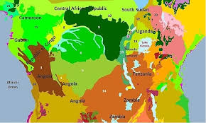

Gorillas are herbivorous, predominantly ground-dwelling great apes that inhabit the tropical forests of equatorial Africa. The genus Gorilla is divided into two species: the eastern gorilla and the western gorilla, and either four or five subspecies.
Around 1,063 exist in the wild.
They live in two isolated groups.
We share around 98% of our DNA with gorillas.
They're one of the biggest, most powerful living primates.
They can eat all day long.
Gorillas typically live in the lowland tropical rainforests of Central Africa, although some subspecies are found in montane rainforest (between 1,500 and 3,500 meters) and in bamboo forest (between 2,500 to 3,000 meters).
